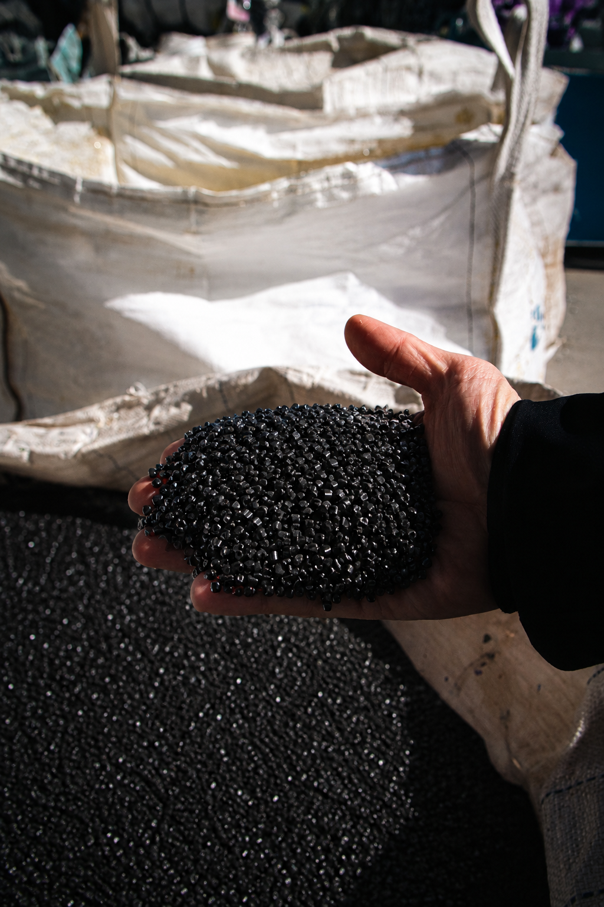

Materia prima reciclada
Los sobrantes de nuestra producción con material virgen no se desechan: los reaprovechamos para fabricar nuevos sacos, como el saco negro y sacos con contenido reciclado. Menos desperdicio industrial, misma resistencia.